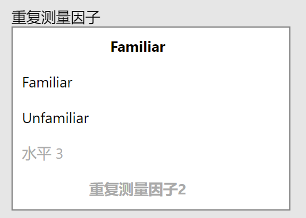

2 Jamovi
汇总：沈佳欣、张宇杰
更新于：2024 Nov 07
2.1 方差分析
导入数据后，依次点击“分析”“方差分析”选项，然后在弹出的选项栏中选择适当的方差分析方法。前五个为参数检验方法，后两个为非参数检验方法，它们分别对应统计课本中的克-瓦氏单向方差分析和弗里德曼两因素等级方差分析。

此次以重复测量方差分析为例。在下图左侧的界面里，左侧是我们数据的名称，右侧的“重复测量因子”是指在研究中设置的“被试内自变量”。在本例中，我们有三个“被试内自变量”，每个自变量都有两个水平。例如我们将“重复测量因子1”定义为Familiar，它包括“familiar”和“unfamiliar”两个水平。


定义好重复测量因子后，“重复测量单元”中会出现各个自变量水平的组合，而“重复测量单元”也就是指研究中的各种实验条件。在本例中我们的实验是一个2 * 2 * 2的被试内设计，所以共有8种实验条件，我们需要做的是将数据拖入其对应的重复测量单元中。

接下来我们要选择效应量为“偏η²值”，以及确定因变量标签。本例中因变量标签为“d-prime”.
下面的五个选项里，我们应当关注的主要是“适用条件判断”和“事后检验”。

对本专业来说，在这一栏中较为重要的是“方差齐性检验”，如果变量中涉及被试间变量，那么应当进行方差齐性检验。但由于本例中的变量都是被试内变量，所以无需进行方差齐性检验。其他几个选项可以根据研究所需进行选取。
所有设定完成后，jamovi会在右侧呈现数据分析结果。